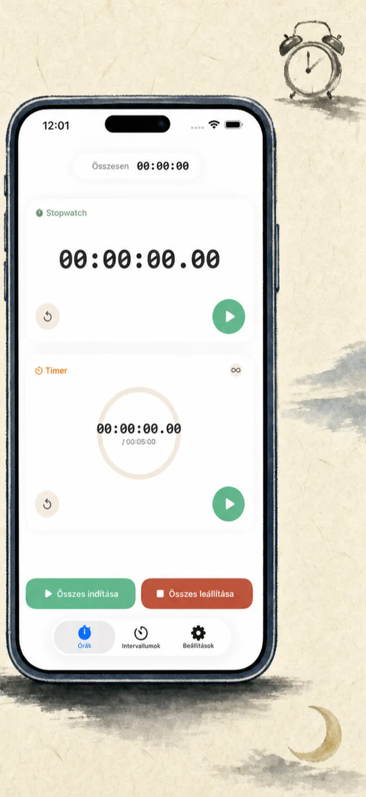
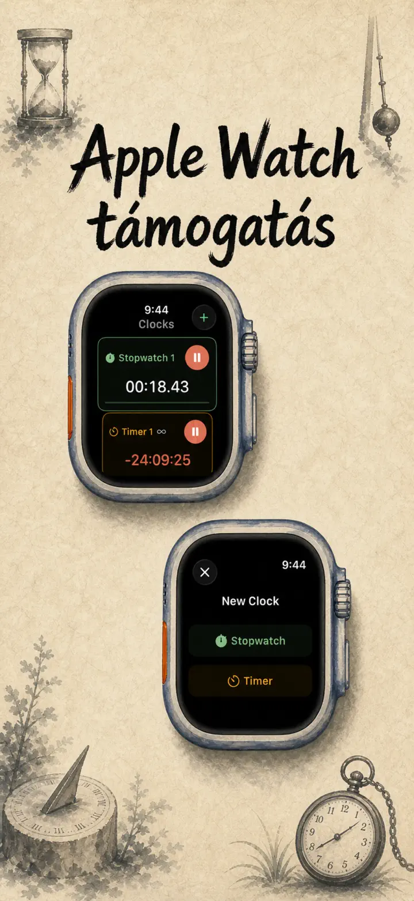
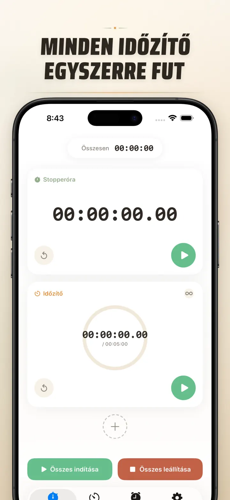
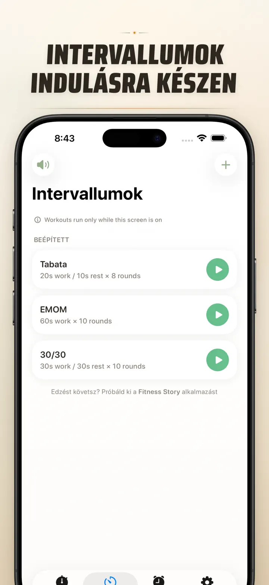
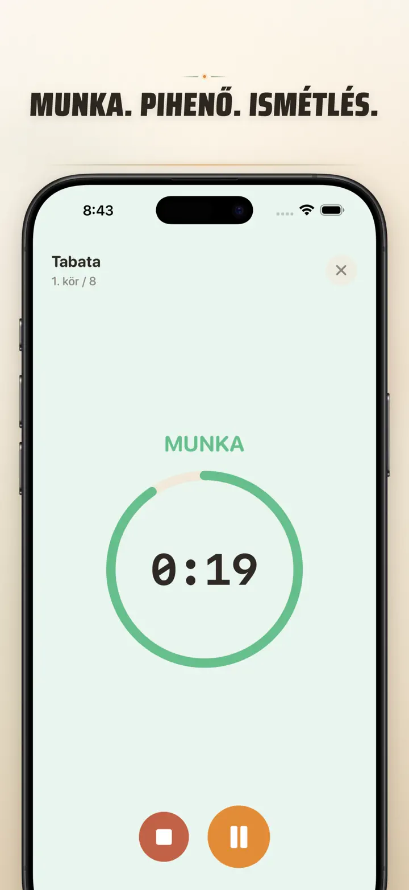
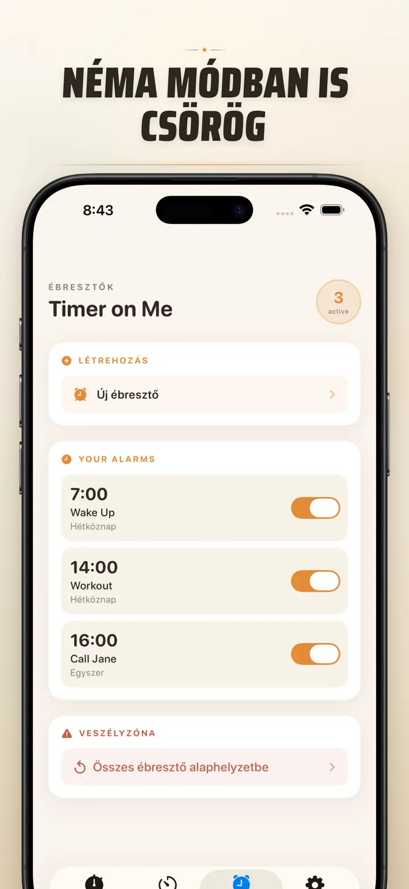

Timer on Me
Multi időzítő, ébresztő, HIIT
Most dátumos ébresztőkkel: egyszeri ébresztő bármely jövőbeli dátumra, ismétlődők, 50 időzítő, HIIT & Tabata és Apple Watch támogatás.
Letöltés az App Store-bólAz alkalmazásról
A Timer on Me a multi-időzítőd és stoppered iPhone-ra, iPadre és Apple Watchra. Akár 50 független időzítő egyszerre, precíz intervallum edzés és riasztások, amik tényleg megszólalnak — akkor is, ha az iPhone le van zárva vagy az app be van zárva.
ÉBRESZTŐK
- Ébresztő és emlékeztető riasztások egyedi címkékkel és hét napjai szerinti ütemezéssel
- AlarmKit-alapú — akkor is megszólal, ha az iPhone lezárva vagy a Timer on Me bezárva van
- Állítható szundi (3 / 5 / 9 / 15 / 30 perc) vagy szundi nélkül
- Válassz a beépített csengőhangokból vagy importálj sajátot
- Egy koppintásos be-/kikapcsolás a külön Ébresztők lapról
EDZÉS ÉS INTERVALLUM
- Kész Tabata, EMOM és 30/30 presetek — két koppintás és indul
- Egyéni intervallum szerkesztő: munka, pihenő és körök percben és másodpercben
- Teljes képernyős edzés mód színváltással fázisonként és néma opcióval
- Szüneteltetés, átugrás és folytatás menet közben haladás elvesztése nélkül
APPLE WATCH
- Igazi natív watchOS app, nem csak a telefon tükrözése
- Több stopper és időzítő fut egyszerre a csuklódon
- Stopper századmásodperces pontossággal
- Saját óralap komplikációk egykoppintásos indításhoz
- Önállóan működik, iPhone nélkül is
50 IDŐZÍTŐ EGYSZERRE
- Akár 50 független időzítő és stopper egy munkamenetben
- Indítás, leállítás és nullázás egyesével vagy csoportosan
- Auto ismétlés ciklikus körökhöz
- Az időzítők nulla után is számolnak a túlidő rögzítéséhez
- Színes haladásjelzők: sárga 50%-nál, piros 10%-nál
- Húzd a sorrendért, adj saját neveket
MEGBÍZHATÓ ÉRTESÍTÉSEK
- AlarmKit: a riasztások akkor is megszólalnak, ha az iPhone lezárva vagy az app zárva van
- Dynamic Island és Live Activity — haladás egy pillantással
- Kezdőképernyő widgetek: kicsi, közepes, nagy
- Beépített csengőhangok: harangok, madárcsicsergés, vintage telefonok
- Koppintsd meg, hogy meghallgasd kiválasztás előtt
- „Képernyő ébren tartása" mód hosszú munkamenetekhez
TESTRESZABÁS ÉS MEGOSZTÁS
- Tizedesek, összegek és százalékok mutatása vagy rejtése
- Presetek mentése és felülírása, egy koppintással vissza
- Exportálás CSV, JSON vagy sima szöveg formátumban
- Oszd meg kollégákkal, tanulókkal vagy az edződdel
iPhone-RA, iPadRE ÉS APPLE WATCHRA
- Elrendezés minden képernyőmérethez
- Split View iPaden
- 34 nyelv
IDEÁLIS
- HIIT, Tabata, CrossFit és köredzés
- Box, kickbox és küzdősport körök
- Pomodoro, érettségi és felvételi tanulás
- Kávéfőzés, tea, lágy tojás, gulyás és sütési idők
- Jóga, pilates, meditáció és légzőgyakorlatok
- Előadás-főpróbák és hangszergyakorlás
- Órák, műhelyek és csoportos tevékenységek
- Társasjátékok és baráti estek
Töltsd le a Timer on Me-t és vedd át az uralmat minden perc felett — az edzőteremben, a munkahelyen vagy otthon.
Adatvédelmi szabályzat: https://masawata.net/privacy-policy.html Felhasználási feltételek: https://www.apple.com/legal/internet-services/itunes/dev/stdeula/
Képernyőképek






Timer on Me
Most dátumos ébresztőkkel: egyszeri ébresztő bármely jövőbeli dátumra, ismétlődők, 50 időzítő, HIIT & Tabata és Apple Watch támogatás.
Letöltés az App Store-ból